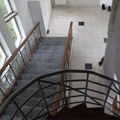

Synergetics and Its Application to Literature and Architecture
Download
A series of phenomena pertaining to economics, quantum physics, language, literary criticism, and especially architecture is studied from the standpoint of synergetics (the study of self-organizing complex systems). It turns out that a whole series of concrete formulas describing these phenomena is identical in these different situations. This is the case of formulas relating to the Bose-Einstein distribution of particles and the distribution of words from a frequency dictionary. This also allows to apply a "quantized" from of the Zipf law to the problem of the authorship of Quiet Flows the Don and to the "blending in" of new architectural structures in an existing environment.
Synergetics and Architecture
Download
A series of phenomena pertaining to economics, quantum physics, language, literary criticism, and especially architecture is studied from the standpoint of synergetics (the study of self-organizing complex systems). It turns out that a whole series of concrete formulas describing these phenomena is identical in these different situations. This is the case of formulas relating to the Bose-Einstein distribution of particles and the distribution of words from a frequency dictionary. This also allows to apply a "quantized" from of the Zipf law to the problem of the authorship of Quiet Flows the Don and to the "blending in" of new architectural structures in an existing environment.


